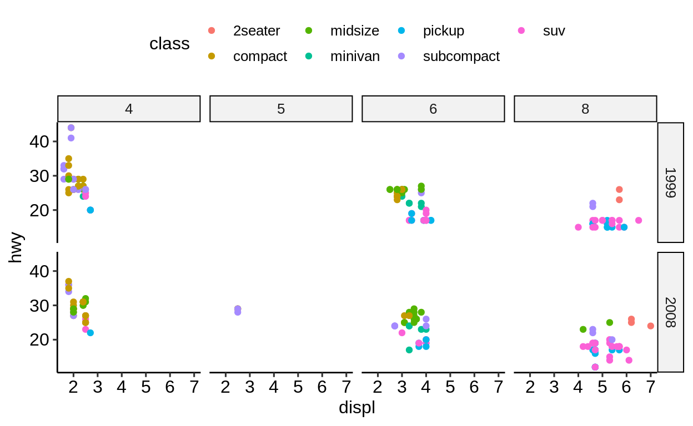

3 {ggplot2} advanced
3.1 Extensions
A mass of R packages extending {ggplot2} exists. Many are listed at http://www.ggplot2-exts.org/gallery/.
Here is a selected list of our favorite {ggplot2} extensions including some use examples.
{ggsci}: https://nanx.me/ggsci/
{ggforce}: https://ggforce.data-imaginist.com/
{patchwork}: https://patchwork.data-imaginist.com/
{gganimate}: https://gganimate.com/
{ggtext}: https://github.com/clauswilke/ggtext
{ggiraph}: http://davidgohel.github.io/ggiraph
{ggbeeswarm}: https://github.com/eclarke/ggbeeswarm
{esquisse}: https://dreamrs.github.io/esquisse
( {ggstatsplot}: https://indrajeetpatil.github.io/ggstatsplot )
( {ggedit}: https://github.com/metrumresearchgroup/ggedit )
( {lindia}: https://github.com/yeukyul/lindia )
Click here to show setup code.
3.1.1 {ggsci}
p1 <- ggplot(mpg, aes(manufacturer)) +
geom_bar(aes(fill = fl))
p2 <- ggplot(mpg, aes(displ, hwy)) +
geom_point(aes(colour = fl))library("patchwork")
p1_npg <- p1 + ggsci::scale_fill_npg()
p2_nejm <- p2 + ggsci::scale_color_nejm()
p1_npg + p2_nejm
3.1.2 {ggforce}
ggplot(iris, aes(Petal.Length, Petal.Width, colour = Species)) +
geom_point() +
ggforce::facet_zoom(x = Species == "versicolor")
3.1.3 {gganimate}
ggplot(gapminder, aes(gdpPercap, lifeExp, size = pop, colour = country)) +
geom_point(alpha = 0.7, show.legend = FALSE) +
scale_colour_manual(values = country_colors) +
scale_size(range = c(2, 12)) +
scale_x_log10() +
facet_wrap(~continent) +
labs(title = 'Year: {frame_time}', x = 'GDP per capita', y = 'life expectancy') +
gganimate::transition_time(year) +
ease_aes('linear')## Warning: No renderer available. Please install the gifski, av,
## or magick package to create animated output## NULL3.1.4 {ggtext}
df <- data.frame(
label = c(
"Some text **in bold.**",
"Linebreaks<br>Linebreaks<br>Linebreaks",
"*x*<sup>2</sup> + 5*x* + *C*<sub>*i*</sub>",
"Some <span style='color:blue'>blue text **in bold.**</span><br>And *italics text.*<br>
And some <span style='font-size:18pt; color:black'>large</span> text."
),
x = c(.2, .1, .5, .9),
y = c(.8, .4, .1, .5),
hjust = c(0.5, 0, 0, 1),
vjust = c(0.5, 1, 0, 0.5),
angle = c(0, 0, 45, -45),
color = c("black", "blue", "black", "red"),
fill = c("cornsilk", "white", "lightblue1", "white")
)ggplot(df) +
aes(
x, y,
label = label, angle = angle, color = color,
hjust = hjust, vjust = vjust
) +
ggtext::geom_richtext(
fill = NA, label.color = NA, # remove background and outline
label.padding = grid::unit(rep(0, 4), "pt") # remove padding
) +
geom_point(color = "black", size = 2) +
scale_color_nejm() +
xlim(0, 1) + ylim(0, 1) +
theme_pubr()
3.1.5 {ggrepel}
no_repel <- ggplot(mtcars, aes(wt, mpg)) +
geom_text(label = rownames(mtcars), size = 3) +
geom_point(color = "red") +
theme_pubr()with_repel <- ggplot(mtcars, aes(wt, mpg)) +
ggrepel::geom_text_repel(label = rownames(mtcars), size = 3) +
geom_point(color = "red") +
theme_pubr()
3.1.6 {ggiraph}
3.1.7 {ggbeeswarm}

3.1.8 {ggpmisc}
p <- ggplot(mpg, aes(factor(cyl), hwy)) +
stat_summary(geom = "col", fun.y = mean, width = 2 / 3, aes(fill = factor(cyl))) +
labs(x = "Number of cylinders", y = NULL, title = "Means") +
scale_fill_nejm(guide = FALSE)
data.tb <- tibble(
x = 7, y = 44,
plot = list(p +
theme_pubr(8))
)ggplot(mpg, aes(displ, hwy)) +
ggpmisc::geom_plot(data = data.tb, aes(x, y, label = plot)) +
geom_point(aes(colour = factor(cyl))) +
scale_colour_nejm() +
labs(
colour = "Engine cylinders\n(number)"
) +
theme_pubr()